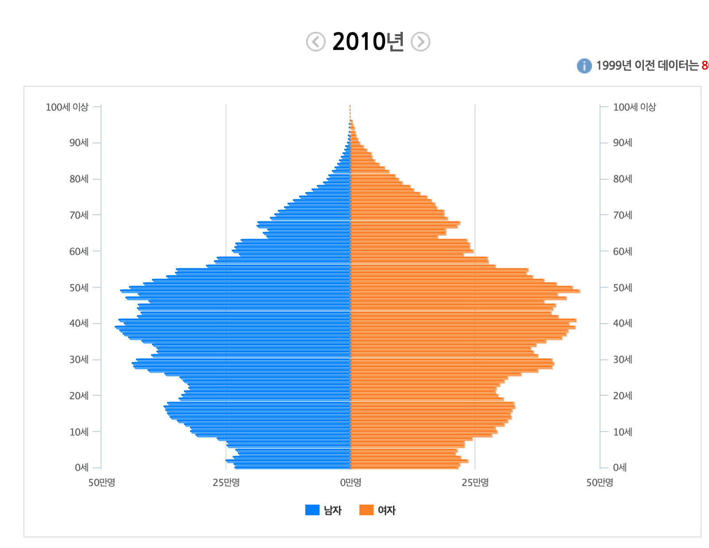

L3. 인간은 어떤 동기를 가지고 어떻게 사회적 활동을 하는가?
진화사회심리학 이론들
지난 시간 리뷰
- 진화심리학의 원리와 주제에 대한 이해
강의 목표
- 진화사회심리학의 연구물음과 성과 그리고 함의들에 대해서 이해한다.
- 생애사 이론과 근본동기 이론에 대해 이해한다.
- 진화사회심리학을 기반으로 한 인구학적 상상력과 미래의 시장에 대해서 이해한다.

진화사회심리학
화성인의 탐구
- 화성인이 사람을 연구할 목적으로 심리학이라는 과학 분야가 있다는 사실을 알고는 대학에 방문
- 인지심리학 : 마음이 어떻게 정보를 처리하는지 연구
- 사회심리학 : 사람들 간의 상호작용을 연구
- 발달심리학 : 사람이 평생동안 어떻게 심리적으로 변해가는지 연구
- 문화심리학 : 미국과 같은 개인주의 문화와 한국 같은 집단 문화 사이의 차이를 연구
- 임상심리학 : 마음의 기능 장애를 연구
화성인의 의문
- 사회적 행동도 분명 정보 처리 과정이 필요한데 왜 사회심리학을 인지심리학과 분리해야할까?
- 또 개인차는 시간이 지나면서 발달하게 마련이고, 중요한 개인차 가운데 많은 것은 사회적 성격을 띠는데, 왜 성격심리학을 사회심리학고 분리해야할까?
- 마음의 기능 장애를 이해하려면 마음이 어떻게 기능하는지도 이해해야 하는데 왜 임상심리학을 나머지 심리학과 분리해야할까?
통합 진화심리학을 향해
- 화성인 동료에게 호모 사피엔스라는 이 기묘한 종에 대한 통합적 이해를 전달하고 싶을 것이다.
- 진화심리학이야말로 이 모든 하위 분야들을 통합할 만큼 충분히 강력하고 유일하게 경쟁력이 있는 메타 이론임
진화사회심리학이란?
- 인간 행동과 사회적 상호작용에 대해 진화이론을 기반의 설명을 제시하는 학문
- 진화적 적합도를 올려주는 행동과 사회적 상호작용 방식이 진화했을 것이라고 가정
- 사회적 상호작용과 그와 관계된 인간 행동을 진화적 이득을 가져다주는 기능으로 보는 관점
진화사회심리학
- 지난 수백만 년 동안 인류가 맞닥뜨린 중요한 적응 문제 중 많은 것은 본질적으로 사회적 성격을 띰
- 언어 사용, 단기적 및 장기적 배우자 관계, 동맹과 평판 등
- 진화심리학의 많은 주제는 진화사회심리학의 영역에 속함.
진화사회심리학의 주요 주제들
- 사회심리학이 다루는 모든 주제에 적용가능하다.
- 초사회성, 소속감, 그리고 자아존중감
- 사회적 주의, 지각, 기억
- 사회적 추론, 인상 형성
- 친사회적 행동
- 공격성
- 성적 이끌림과 짝 선택
- 양육
- 사회적 영향
- 집단 동학
- 집단간 편견과 갈등
- 도덕적 감정의 진화
초사회성, 소속감, 자아 존중감
- 인간은 홀로보다 집단에 속해 있을때 생존과 번식에 유리하다.
- 집단 구성원으로부터 받아들여지기를 기대하며 소속에 대한 강한 욕구를 보인다.
- 그렇기 때문에 집단으로부터 배제되는 것은 개인에게 큰 고통을 주도록 설계되었다.
- 자아 존중감은 소속감을 알리는 신호 역할을 한다.
- 집단에서 배제된 사람이 겪는 고통과 물리적 고통의 비교 뇌영상 연구
사회적 주의, 지각, 기억
- 인간은 사회적 내용이 담긴 자극에 대해서 더 주의를 기울이고, 알아차리며 오래 기억한다.
- 화난 남성의 얼굴, 신체적으로 매력적인 이성, 우는 아이 등
- 짝을 구해야하는 상황에 있는 사람은 매력적인 이성의 모습에 주의를 더 기울이고, 짝이 있는 상황에서는 매력적인 동성의 모습에 주의를 더 기울임
사회적 추론, 인상 형성
- Stereotype content model
- 따뜻함과 유능함이라는 두 차원의 공간에서 사람을 판단
- 그 중 따뜻함이 인상형성의 핵심이 된다.
- 따뜻함은 상대가 믿을만하고 상호호혜적 관계를 형성할 수 있을지와 관련이 있다.
- 유능함은 가치있는 지식과 기술을 보유하고 있는 사람을 원하고 또 그를 통해 배우고자 하는 진화적 경향성과 연관이 있다.
Stereotype content model

친사회적 행동
- 낙인 씌우기(Stigmatization)
- 일종의 ’이타적 처벌’로서 기능
- 집단에 도움이 안되는 개인(상호호혜성 상실, 전염성 질병을 옮길 위험, 아이들의 반사회적 행동, 권위에 대한 도전 등)을 사회에서 배제하고 낙인 찍는다.
공격성
- 공격성이 높은 비용을 초래하지만 왜 사람들은 공격적으로 행동하도록 진화했는지?
- 폭력과 살인이 어떤 관계에서 많이 일어나는지?
- 공격성은 맥락과 젠더에 따라 다른 양상을 보인다.
- 계부에 의한 폭력과 영아 살해, 배우자 살해와 강간 등
- 짝을 얻고자 하는 남성의 경우 두가지 전략이 있음.
- 여성이 좋아할 자질들을 보여주는 것(좋은 유전자, 자원, 지위 등)
- 국소적인 지역에서의 실질적 우위를 보이기 위해 직접 경쟁적 행위에 뛰어드는 것
- 여성의 폭력은 직접적인 형태보다는 간접적인 형태로 이뤄진다(언어적 형태 또는 사회적 배제 등)
성적 이끌림과 짝 선택
- 은폐된 배란
- 배란 주기에 따른 매력을 느끼느 대상의 특질이 달라짐.
- 여성이 배란기에 가까울 때에는 잠재적인 자녀의 면역 능력을 향상시킬 수 있는 남성성(음악적 리듬감 등을 포함한 대칭적인 신체, 중저음, 큰 키, 후각적인 단서)을 더 선호한다.
- 배란기에 가까울때 현재 성적 파트너가 만족스럽지 못하다면 남성성이 높은 상대와 혼외관계를 갖는 것에 관심을 더 기울이는 것으로 나타남
장기적 관계
- 장기적 관계를 지키기 위한 심리기제 발달
- 질투심이 많은 여성은 잠재적 라이벌의 외모에 더 관심을 두고, 질투심이 많은 남성은 잠재적 라이벌의 지위에 관심을 보인다.
- 남성은 여성의 육체적 부정(infidelity)에 더욱 화를 내고(부성불확실성), 여성은 남성의 정서적 부정에 더욱 화를 냈다(자원을 내 자녀가 아닌 다른 곳에 쓸 가능성)
양육
- 진화적으로 봤을때 장기적 관계의 궁극적 목표는 자녀를 낳아 길러 그 자녀들이 성공적인 번식을 할 수 있게 만드는 것.
- 생애사 이론에 따르면 양육 행위는 자원의 가용성, 자녀의 욕구, 자녀의 잠재적인 번식적 성공가능성, 다른 자녀(형제자매)의 존재, 내 자녀인지에 대한 확실성(남성의 경우) 등 다양한 변수에 따라 그 양상이 달라진다.
사회적 영향
- 놀랍게도 우리가 바라는 것처럼 개인은 독립적이고 자유롭게 생각하는 존재가 아니라 사회적 영향에 취약한 존재라는 사실이 심리학 실험을 통해 밝혀짐
- 그러나 진화적으로 보면 이러한 인간의 복종적이고 순응하는 경향은 놀랍지는 않다.
- 권위에 따르는 행위는 경쟁적인 상황에서 집단에 큰 진화적 이점을 가져다 주었을 것이기 때문이다.
- 순응은 사회에서 배제되는 것을 방지하기 위한 전략
- 남성과 여성 모두 순응 전략을 가지고 있지만 남성이 짝 획득의 단계에 있을때 반순응 전략을 취하는 경향을 보이기도 한다.
집단 동학
- 집단을 유지하기 위해 어떤 요인들이 필요한가?
- 협력 수준 유지, 무임승차자 관리 등
- 어떤 상황에서 어떤 리더십이 요구되는가?
- 평시보다 전시에 남성적인 얼굴 특징을 지닌 정치가들이 선호된다.
- 집단간 경쟁의 상황에서 남성 리더가, 집단내 갈등 조정에는 여성 리더가 선호된다.
집단간 편견과 갈등
- Social Dominance Theory
- 어떻게 사회가 그룹 기반의 지배 체계를 형성할 수 있는지에 대한 이론
- 성향적으로 social dominance 위계에 우호적일수록 성차별주의, 인종차별주의와 같은 편견을 더 많이 보인다.
도덕적 감정의 진화
줄리와 마크는 오빠와 여동생 사이다. 두 사람은 대학을 다니다가 여름 방학 때 함께 프랑스로 여행을 갔다. 어느날 밤, 두 사람은 해변의 방갈로에 단 둘이 묵게 되었다. 그들은 함께 사랑을 나누면 흥미롭고 재미있을 것이라고 판단했다. 최소한 각자에게 아주 새로운 경험이 될 것 같았다. 줄리는 이미 경구 피임약을 복용하고 있었지만, 마크는 만전을 기하기 위해 콘돔을 사용했다. 두 사람은 섹스를 즐겼지만 다시는 그러지 않기로 결정했다. 두 사람은 그 날 밤의 일을 특별한 비밀로 간직하기로 했고, 그 때문에 서로 더욱 친밀해진 느낌이 들었다. 자, 여러분은 어떻게 생각하는가? 두 사람이 섹스를 하는 게 괜찮다고 생각하는가?(Haidt, 2001, p.814)
도덕적 말막힘 현상
- 위 사례에 대해서 그럴듯한 이유를 대지 못하지만
- “몰라요 설명은 할 수 없지만 어쨋든 그게 잘못된 행동이라는 건 확실해요”
- 하이트는 사람들이 불쾌감을 느끼지만 분명히 희생자가 없는 다른 시나리오들에서도 비슷한 반응을 발견했다.
- 진화적으로 근친상간에 대한 반감은 근친교배를 막기 위해 진화했다.
- 그리고 이 반감에서 많은 비중을 차지하는 것은 ’역겨움’이라는 감정
From oral to moral
역겨움의 도덕적 지위
- 역겨움은 본래 독성을 띤 물질이나 오염된 물질로부터 신체를 방어하기 위한 기능으로 나타났음.
- 비도덕적 상황, 사회 계약을 위반하는 개체를 멀리하고 배척하기 위한 수단으로 역겨움이라는 감정을 활용.
기타 도덕적 감정들
분노 : 사회 계약을 위배하는 사람들을 처벌하는 기능
- 참여자들은 불의의 희생자가 손실을 받아들이고 불의를 저지른 자를 용서한 뒤에 성장과 성취를 경험하는 결말을 불쾌하게 여겼다.
- 참여자들은 불의를 저지른 자가 큰 고통을 겪고 그 고통이 자신의 행위에 대한 인과응보라는 사실을 깨닫고 그 과정에서 공개적으로 모욕을 당하는 결말을 가장 만족스럽게 여겼다.
기타 도덕적 감정들
당혹감과 수치심 : 양보와 복종을 촉진하기 위해 진화
- 당혹감은 지위가 더 높은 사람들과 있을 때 가장 분명하게 나타나며, 지위가 낮은 사람들과 함께 있을 때에는 거의 일어나지 않는다.
- 수치심은 당혹감보다 훨씬 강도가 세며, 도덕적 기준을 맞추는 데 실패한 일이 공개되었을 때 작동한다.
- 두 감정은 숨거나 물러나고 싶은 욕구를 자극하여 그 사람의 사회적 존재를 축소시킨다.
기타 도덕적 감정들
죄책감 : 공동체적 관계를 위반했을때 발생
- 수치심은 위계적 상호작용과 관계가 있는 반면, 죄책감은 공동체적 관계를 위반했을때 생긴다.
- 내 잘못으로 누가 손해를 입었을 때, 그 사람에게 내가 손해를 입혔다는 사실을 안다는 신호를 보내기 위해 진화했을 가능성이 있다.
- 죄책감은 고백과 사롸를 하도록 동기를 부여한다.
기타 도덕 감정들
경멸, 동정심, 감사
- 경멸 : 무례, 의무, 서열 등을 도덕적으로 위반했을때 나타남
- 동정심 : 사람들에게 고통을 받는 남들을 돕도록 움직이게 함
- 감사 : 자신에게 친절을 베푼 사람에게 더 친사회적으로 행동하게 하는 기능
기타 도덕적 감정들
내집단과 외집단에서 다른 양상으로 나타나는 공포
- 내집단 구성원에 대한 조건 공포 반응은 쉽게 없앨 수 있지만,
- 외집단 구성원에 대한 공포는 없애기가 매우 어려움
- 특히 남성 외집단 구성원에 대한 공포
- 남성 외집단에 대한 특별한 편견이 남자 조상들에게는 물리적 공격에 대해, 여자 조상들에게는 성적 강압에 대해 방어해야 하는 적응 문제를 해결하는 데 도움을 주었을 것이라고 주장
- 편견을 없앰으로써 도덕성을 더 넒은 집단으로 확대하려면 무엇이 필요할까?
The Righteous Mind - Jonathan Haidt


Moral Foundations Theory
Moral Foundations Theory
- 서로가 서로를 죽일듯이 미워하고 도덕적 정당성이 자신들에게 있다고 주장하는 이 상황
- 정말 어느 한쪽이 옳은가?
- 진보주의자와 보수주의자들은 서로 다른 도덕 기준을 가지고 있다.
- 보수주의자들은 집단을 유지하기 위해 필요했던 도덕 기준들도 다른 개인 기반의 도덕적 기준들 못지않게 평가하는 경향이 있다.
Moral Foundations Theory
- 개인 기반 도덕 기초 : 위해(harm), 공평성(fairness)
- 집단 기반 도덕 기초 : 위계(Authority), 내집단(Ingroup), 순수(purity)
- 그 중 한 기준인 순수성(purity) 기준은 역겨운 행위에 대한 거부, 신성하지 않은 것에 대한 반감 등을 나타낸다.

생애사 이론과 근본동기 이론
생애사 이론
- 자원이 한정되어 있다는 전제, trade-off
- 어느 전략을 채택할 것인가?
r-selection and K-selection
- 생태학에서의 개념
- r-selection vs. K-selection

r-selection 과 K-selection의 특징
| Features | r-selection | K-selection |
|---|---|---|
| Example | Bacteria, insects | Primates, including humans |
| Development | Rapid | Slow |
| Reproduction Rate | High | Low |
| Reproductive age | Early | Late |
| Body size | Small | Large |
| Reproductive type | Single reproduction | Repeated reproduction |
| Length of life | Short | Long |
| Competitive ablility | weak | Strong |
fast(r) and slow(K) strategy (한 종 내에서)
- 한 종 내에서도 변이가 존재함
- 이러한 변이는 유전적인 부분도 영향을 주겠지만, 어떠한 환경에서 자랐는지에 따라서 변화할 수 있음.

생애사 전략 선택에 있어 환경의 역할

참고자료 : Ellis et al.(2009)
생애사 전략 선택에 있어 환경의 역할
- 주변 환경에서 자원이 풍부하고 성체의 평균 수명이 짧으면 fast 전략
- 자원이 희소하면 slow 전략
- 자원이 풍부하고 성체의 수명이 길고 경쟁이 심하면 slow 전략
- 어릴때 사망률이 높은 환경에서 부모의 투자에 의해 사망률이 민감하다면 slow 전략
- 아니라면 juvenile기의 빠른 성장과 발달 전략
전략과 자원할당
- 자원할당의 문제
- 지금이냐 나중이냐?(결혼 등)
- 양(quantity)이냐 질(quality)이냐?(자녀)
- 인생(자녀까지도 포함)의 시간표를 정하는 문제
- 지금, 양 vs. 나중, 질
- 나중과 질을 선택했을 때 ’투자’를 해야함.
- 어디에? -> 우리 몸에!
Embodied capital
Embodied capital can be defined as a stock of attributes embodied in the soma of an organism which can be converted, either directly or, more commonly, in combination with other forms of capital, into fitness-enhancing commodities
참고자료 : Kaplan et al.(1995)
동기(motivation)의 역할
인생의 시간표가 정해졌으면 지금 시점에서 해야할 것들을 해야하는데 이때 상황에 맞는 동기들이 발현되어 행동을 추동한다.
동기에 대한 이론들
- 근본동기 이론
- 매슬로우의 욕구이론
생애사 이론과 근본동기 이론

매슬로우 욕구이론 vs. 근본 동기 이론

매슬로우 욕구이론의 한계
- 위계 구조에 있는 각 욕구들에 대해 진화적으로 궁극적인 원인을 제시하지 않는다.
- 욕구들이 독립적으로 작용하는 것으로 생각하게 만듦
- 더 상위의 욕구를 추구해야하는 것으로 생각하게 만듦
생애사 이론의 특징1
- 욕구끼리 서로를 억제하고 촉진하기도 하는 관계
- 양육 동기는 생리학적 동기를 억제하기도 함(Case et al., 2006)
- 내 아이의 대변 냄새는 역겹다고 여기지 않는다(심지어 대변의 출처를 모른 상태에서도).
- 생리학적 동기는 재생산 동기에 영향을 준다(성적 접촉은 일반적으로 타인의 체액과의 접촉을 수반하여 감염의 위험을 증가시킨다.)(Al-Shawaf et al., 2018; Fleischman, 2014; Phelan and Edlund, 2016; Tybur et al., 2013)
- 파트너를 고를 때 감염병을 전달할 것 같은 파트너를 피하는 적응이 있음.
- 양육 동기는 생리학적 동기를 억제하기도 함(Case et al., 2006)
- 생애사 전략에 따라 세워진 시간표에 따라 우세한 동기가 있지만 여러 동기가 중첩되어 나타날 수도 있다.
즉각적인 생리학적 요구
- 의식주와 관련됨
- 전 생애에 걸쳐 존재하는 상수(constant)와 같음.
- 배달, 식재료 배송, 세탁물 수거배송, 숙박 등
- 즉각적이지 않은 기호의 영역까지도 확장되고 있음.
- 감염의 위험을 가진 대상과 접촉하지 않으려는 동기
자기 보호 동기
- 타인이 가할 수도 있는 위해로부터 자신을 보호하고자 하는 동기
- 적은 확률이지만 일어날 수도 있는 위험에 대비하도록 해주는 장치들

소속 동기
사회적 연결을 추구하고, 집단의 일원이 되며, 배제되는 것을 피하고자 하는 동기
대부분의 메신저와 SNS 서비스
소속이라는 것은 집단 안에서 계속된 소통을 통해 형성되는 것
다른 동기 영역에서 함께 이득이 되는 경우가 많다.(기존의 SNS 및 암호화폐 커뮤니티 등)
지위/존중 동기
- 다른 이들로부터 존중을 받고 사회적 위계에서 상층으로 이동하고자 하는 동기
- 모든 web2 기반의 서비스에 있는 각종 리액션(좋아요, 댓글 등) 기능들
- 명품과 관련된 사업, 한정판에 대한 욕구 등
짝 획득 동기
- 연애 상대/성적 파트너/배우자를 찾고자 하는 동기
- 수많은 채널들이 있으나 점점 온라인의 비중이 커지고 있음.

짝 획득 동기
- 단기적 짝짓기 전략
- 외모의 중요성
- 틴더
- 간결한 UI(스와이핑)로 새로운 상대를 빠르게 탐색할 수 있고 매칭할 수 있게 해줌
- azar
- tinder의 화상 버전

짝 획득 동기
- 장기적 짝짓기 전략
- 직업, 소득 등의 외부 조건을 중간에서 보증해주는 것이 필요함.
- 각종 결혼 정보업체

짝 유지 동기
- 현재의 연인/성적 파트너/배우자와의 관계를 유지하려는 동기
- 비트윈

짝 유지 동기
개방형 메신저, SNS 라는 환경이 갖추어진 후 나타날 수 밖에 없음
연인 간에 서로에게 더 헌신하려는 동기를 자극한 서비스
획득, 유지 둘 중에 어느 시장이 클까?
양육 동기
- 동기 피라미드의 꼭대기
- 시간과 에너지를 들여 자녀나 가족의 일원을 돌보려는 동기
- 다양한 영유아 육아 및 교육 서비스 및 제품
매슬로우가 말한 자기 실현 욕구는?
- 자기실현의 욕구는 근본동기 이론에 직접적으로 매칭되지 않는다.
- 진화론에서의 자기 실현이라는 것은 궁극적 원인이 아니라 궁극적 원인(더 좋은 짝을 만나는 것, 자녀를 잘 양육하는 것 등)을 위한 수단(근접 원인)이라고 해석할 수 있다.
- 자기실현을 위해 애쓰는 것은 다른 적응적 메커니즘의 비적응적 결과물이라고 할 수 있음.
- 그러나 서비스나 사업을 운영함에 있어서는 궁극 원인에 대한 이해와 더불어 근접 원인에 대해서도 제대로 파악해야 한다는 측면에서 같이 참고하면 좋을 것.
행복에 대한 논쟁
- 자기 실현 욕구는 행복과 연관이 깊다.
- 보통 많은 사람들이 쾌락적인 것으로는 진정한 행복을 이룰수 없고 자아실현과 같은 의미를 추구할 때 진정한 행복이 달성된다고 생각한다.
- 따라서 자아 실현 등을 추구하는 것을 행복의 조건이고 독립적인 동기로서 인식하게 되는 경향이 있다.
행복의 기원

행복은 동전 탐지기에서 울리는 알람
- 행복은 생존/번식과 연관된 핵심적 자원을 얻기 위한 수단.
- 핵심 자원을 동전이라고 하고 우리가 동전 탐지기라면 행복은 동전 탐지했을때 울리는 알람 같은 것
- 인간에게 이 수단의 큰 부분은 사회적 자원!
- 따라서 성격적인 요인 중 외향성이 높은 사람이 내향적인 사람에 비해 행복하다.
- 심지어 내향적인 사람도 외향적인 것처럼 행동하면 행복 지수가 올라간다.
외향성과 행복
자기 실현 욕구와 행복
- 행복이 탐지기의 알람이라면
- 자기 실현 욕구를 달성했을때 알람이 울리는 것인가?
- 자기 실현 욕구를 달성할때 어떤 생존 및 번식과 연관된 핵심 자원들이 얻어지는 지 살펴보자.
자기 실현 욕구와 Embodied capital의 축적
- 많은 교육 사업은 이러한 자기실현적 동기를 자극한다.
- 교육 서비스를 통해 질적으로 embodied capital이 축적되고,
- 이는 신규 사용자들에 대한 홍보 수단으로 사용됨.
자기 실현은 보통 사회적 장을 통해 실현된다.

생애사 이론과 인구학의 연관성
- 생애사 이론이 담당하는 미시적 마음구조가 모여 인구학에서 다루는 거시적 인구 현상이 나타남


인구 피라미드 변화


참고자료 : [Link]
도시 소멸 지수

출산의도와 수도권 밀집에 대한 밀도효과

자연 실험(정부부처 이전)
생애사 전략의 비극
- 높은 인구밀도 속 극도의 느린 전략들 추구
- 느린 전략가들 속 해방구를 찾는 젊은층
- 데이팅앱의 증가세
- 익명성 속 빠른 전략의 추구
생애사 전략의 비극

인구학적 상상력과 시장 규모 추산
- 연령 분포가 어떻게 변하고 있는가?
- 공간적으로 분포가 어떻게 변하고 있는가?
- 동기의 구성과 지리적 분포가 어떻게 변하고 있는가?
- 동기를 가진 사람 = 실제로 돈을 낼 사람
- 시장의 지형이 어떻게 변하고 있는가?
문제는 그리 단순하지 않다!
젊은 층의 인구는 급격하게 줄어들지만, 적게 낳아 질적인 투자를 중요시 하므로 양육비, 교육비는 늘어날 수 있다.
강의 요약
강의 요약
- 사회적 상호작용과 연관된 진화사회심리학의 주제들에 대해 배워보았음.
- 진화사회심리학 이론 중 생애사 이론과 생애사 전략의 내용을 학습했음.
- 생애사 주기에 따라 발현되는 근본동기를 다루는 근본동기 이론의 내용에 대해 학습
- 진화사회심리학적 지식은 매우 변화하는 복잡한 시장을 이해하고 예측하는데 유용할 것이다.
Quiz1!
왜 클럽에서는 여성에게 입장료를 받지 않고, 결혼정보업체에서는 여성에게 가입비를 더 많이 받을까?
왜 결혼정보업체에서는 조건이 좋은 여성에게 가입비를 더 많이 받을까?
Quiz2!
- 자신이 관심을 두고 있는 시장에서 사람들의 동기를 기반으로 market(target) segmentation을 하는 사례를 찾아보세요!
Quiz3!
- 인간 생애사 및 근본동기 그리고 인구학적 상상력을 기반으로 어떤 사업 아이템이 가능할지 생각해보세요(저연령층 감소, 노령층 증가와 같은 너무나 익숙한 사실들에서 초래될 수 있는 문제들을 한번 더 생각해보고 작성해 주세요)


인간 본성의 과학적 이해